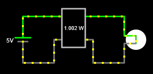

8. Electric power¶
The electric power is the amount of energy it delivers or consumes an electrical component or circuit every second.
The power is directly proportional to the voltage and the current of a circuit, so that the more tension the circuit the plus power will consume. The more current consumes a more power circuit will consume.
Watts¶
The electrical power is measured in watts, abbreviated with the letter [W].
The following table shows the typical powers that consume several common components in our environment:
| Component | Power [W] |
|---|---|
| Led ON indicator. | 20 millivats |
| Ceiling led bulb. | 10 watts |
| Kitchen blender. | 400 watts |
| Air electric heater. | 2000 watts |
Wattmeter¶
A wattmeter is an electrical apparatus that allows measuring the power consumed by an electrical component or circuit. The wattmeter is always connected between the generator and the element that you want to measure, so it is necessary to cut the circuit to be able to insert it. By having four cables, the cutimeter shorts both the first leg and the cable back of the current:

To simulate an wattmeter we must choose it from the menu Draw... Meters and Labels... Add Wattmeter.
In the following simulated circuit, add a wattmeter that measure the power consumed by the lamp.
Next, draw another voltage source connected to two lamps in parallel and insert another wattmeter to verify that the power consumed is double the previous one:
Exercises¶
- What is electrical power?
- How does electrical power relate to voltage and electric current?
- In which units is the electrical power measured? Name at least three common elements of our environment and write the electrical power they consume.
- What is a wattmeter? How should you connect to measure power?